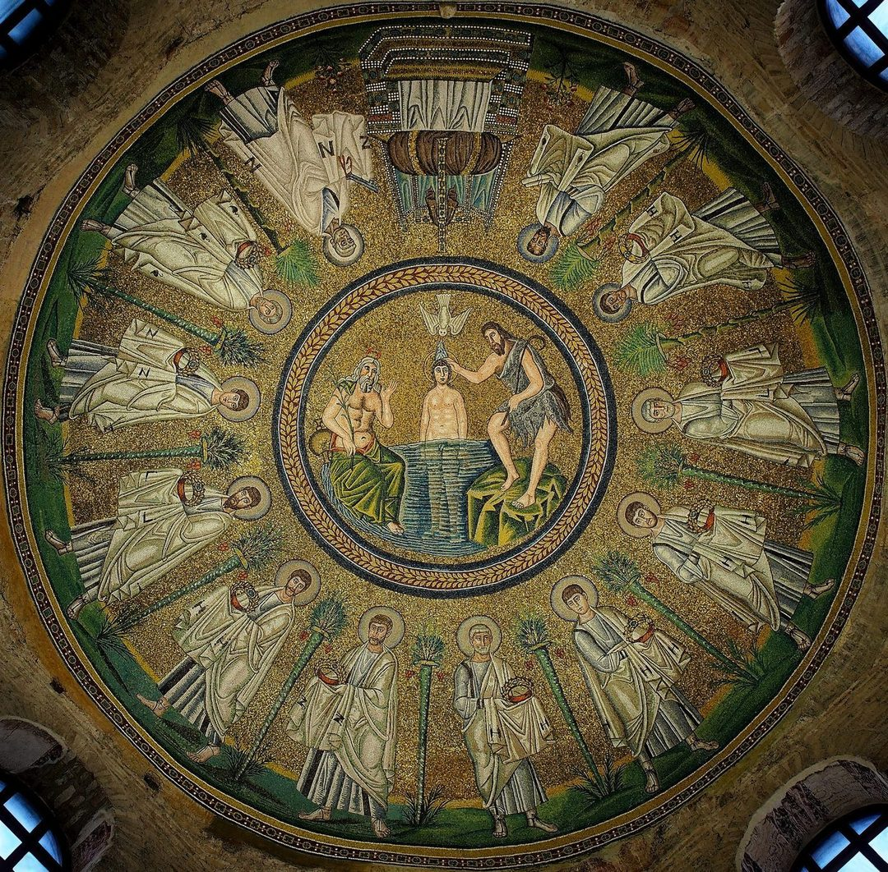

使徒信經的歷史演變與神學建構：從早期羅馬洗禮宣誓到西方大公信仰奠基的學術研究報告

緣起：新約實踐與「古羅馬信經」的形成
新約與教父時期的教義雛形
在西方基督宗教傳統中，長期流傳著一個關於《使徒信經》（Apostles' Creed）起源的聖傳故事。該傳說指出，在耶穌升天後的第十天（即五旬節當天），十二位使徒在耶路撒冷準備分散往各地傳道前，在聖靈的默示下共同撰寫了這份信經[1]。傳說中，十二使徒每人各提供了一句教義，例如彼得宣告「我信上帝，全能的父」，安得烈接著宣告「我信我主耶穌基督，上帝的獨生子」，以此類推，最終拼湊出十二條核心信仰宣言，以確保各地宣教真理的合一與純正[2]。此一傳說在早期中世紀得到了廣泛的尊崇，甚至在六世紀由偽奧古斯丁（Pseudo-Augustinian）的作品進一步將每位使徒與具體條文作了系統性的配對，成為當時重要的教導與記憶工具[3]。
然而，到了文藝復興與宗教改革時期，歷史批判學者對此提出了根本性的質疑。義大利人文主義學者洛倫佐·瓦拉（Lorenzo Valla, 1407–1457）透過嚴謹的文獻學與歷史考證，證實該傳說純屬虛構[1]。隨後的歷史神學研究亦指出，若該信經真為使徒集體創作，理應在《使徒行傳》或新約書信中有所記載，且早期教會在面對重大的亞利烏派（Arianism）等基督論爭議時，也不會略過此一極具權威的使徒文本而另尋他法[6]。
歷史神學家指出，《使徒信經》並非由使徒親自撰寫，而是早期教會在歷史發展中，基於使徒的口傳教義逐步編輯、修訂而成的大公信仰結晶[1]。其教義根基可以追溯至新約聖經中最原始的信仰宣告。在《使徒行傳》中，埃提阿伯太監受洗時宣告「我信耶穌基督是上帝的兒子」[6]（雖然此句宣告在最早期的西乃、梵蒂岡等主要抄本中付之闕如，被認為是後世反映洗禮儀式的西方插補，但確實代表了極早期的洗禮宣告形式），這便是最早期洗禮認信的雛形。保羅在書信中亦多次提及「信仰的規範」或「教導的模式」，如提醒提摩太在許多證人面前所作的「美好宣告」[2]。這些早期文本包含了對上帝作為生命源頭、基督的歷史性受難與復活、以及祂必將再來審判活人死人的核心宣認，為日後信經的系統化發展奠定了文本基石[2]。
隨著使徒時代的結束，二至三世紀的早期教父如愛任紐（Irenaeus，二世紀）、特土良（Tertullian，二至三世紀）、奧利振（Origen）、諾瓦蒂安（Novatianus）與居普良（Cyprian，皆為三世紀）等，在面對諾斯底主義與馬吉安派的嚴峻挑戰時，頻繁訴諸一種被稱為「信仰規範」（Regula Fidei）或「真理規範」的口傳教義總綱[10]。儘管當時各地方教會的「信仰規範」在遣詞用字上因地域而異，但其核心結構高度一致，皆圍繞著三位一體的架構展開[6]。
早期羅馬洗禮儀式與答問式信經的實踐

歷史研究表明，《使徒信經》的核心內涵與結構，源自早期羅馬教會在施行洗禮時的口頭問答儀式（Interrogatory Creeds）[2]。這種問答式的實踐，在傳統上被認為由希波律陀（Hippolytus）於三世紀初（約 215 AD）撰寫的《使徒傳統》（Apostolic Tradition）中得到了最為完整的記錄[1]（儘管現代禮儀史學界多認為該書是二至四世紀在東方層累彙整而成的匿名文獻集）。當時在羅馬準備受洗的信徒，會走到洗禮池的池水之中，施洗的主教或長老會依據馬太福音二十八章十九節的大使命公式，向受洗者提出三個關鍵的信仰提問[13]：
- 「你信全能的上帝父嗎？」[3]
- 「你信上帝之子基督耶穌，由聖靈及童貞女馬利亞所生，在本丟彼拉多手下被釘十字架、受死、埋葬，第三天從死人中復活，升天，坐在父的右邊，將來必降臨審判活人與死人嗎？」[3]
- 「你信聖靈、聖教會和身體復活嗎？」[3]
受洗者在每一次提問後回答「我信」，並隨即被浸入水中一次，洗禮在三次浸水與三次口頭認信後方告完成[9]。這種問答式的信仰條文，逐步在實踐中被整理成連續性的陳述句，要求受洗者在洗禮前熟記並在儀式中主動宣認，從而推動了洗禮信經從「被動答問」向「主動宣告」的文本化演變[9]。
古羅馬信經（Old Roman Symbol）的雙語見證
到了四世紀，這種在羅馬教區廣泛使用的洗禮宣言，在學術界被稱為「古羅馬信經」或「古羅馬符號」（Old Roman Symbol / vetus symbolum romanum）[6]。它是今日《使徒信經》最直接的祖先[11]。古羅馬信經在歷史上留下了極為珍貴的雙語文獻證言，其拉丁文與希臘文版本高度一致，但並非完全逐字對譯（例如希臘文版收錄了「永生」，而拉丁文版則予以省略）[15]。
希臘文版本最古老的證言，來自安基拉的主教馬塞路（Marcellus of Ancyra）於約340或341 AD寫給羅馬主教儒略一世（Pope Julius I）的申辯信[1]。當時，馬塞路因其強烈的反亞利烏派神學立場，在亞利烏派勢力的排擠下被逐出其教區，隨後在羅馬流亡了兩年[15]。在他準備離開羅馬前，他將這份完全符合羅馬地方信仰標準的希臘文信經呈交予儒略一世，以證明自身信仰的純正性[15]。
而拉丁文版本的最古老見證，則首見於阿奎萊亞的長老提拉尼烏斯·魯菲努斯（Tyrannius Rufinus of Aquileia）於約 400 AD 所撰寫的《使徒信經釋義》（Commentarius in Symbolum Apostolorum）[11]。魯菲努斯在該書中，將阿奎萊亞教會的洗禮信經與羅馬教會的信經進行了詳細的對比，指出兩者之間的微小差異，從而為後世學者復原古羅馬信經的完整拉丁文本提供了關鍵依據[1]。
大約在同一時期，雷梅西亞納的尼西塔斯（Nicetas of Remesiana）亦撰寫了《信經釋義》（Explanatio Symboli），該作同樣基於古羅馬信經，但極具神學前瞻性地包含了「永生（vitam eternam）」與「聖徒相通（communionem sanctorum）」等條款[15]。這些條款在當時馬塞路與魯菲努斯記錄的羅馬本中尚未完全整合（馬塞路的希臘文版有「永生」，但魯菲努斯的拉丁文版則省略了這一點），反映出四世紀末地方信經之間複雜的交融軌跡[15]。
編輯與修訂的文本演變：從羅馬古本到高盧公認文本
關鍵神學詞彙的添加與歷史論爭
古羅馬信經雖然結構嚴謹，但在面對四至六世紀日趨複雜的異端思潮時，其簡樸的遣詞用字顯得防禦性不足。因此，自五世紀起，高盧（今法國南部）與西班牙等地的教會開始對古羅馬信經進行局部的文本修訂與擴展，將防範異端、深化救贖論的神學詞彙編織進信經的骨架中[3]。
對於這些文本擴展的歷史動因，神學界存在著長期的學術論爭[12]。十九世紀末至二十世紀初，德國自由派神學家哈納克（Adolf von Harnack）與米爾布特（Carl Mirbt）主張，古羅馬信經的原始形式大約在150 AD或更早便已定型[12]。而神學家麥吉弗特（A.C. McGiffert）與克魯格（Gustav Krüger）則提出了一種更具爭議性的「反異端起源說」，認為該信經大約在160 AD被系統性地建構出來，其核心目的在於針對性地反駁馬吉安派否定物質創造、以及諾斯底派否定基督真實肉身的神學立場[12]。
不論起源論爭如何，公認文本中添加的每一處修飾詞，都承載著極其深厚的神學辯證：
| 信經章節 | 古羅馬信經（c. 400 AD） | 公認文本（Textus Receptus, c. 710-714 AD） | 增補詞彙之歷史與神學意涵 |
|---|---|---|---|
| 第一部分：父神 | Credo in deum patrem omnipotentem[15] | Credo in Deum Patrem omnipotentem, Creatorem caeli et terrae[16] | 「創造天地的主」：直接針對馬吉安派與諾斯底派的二元論，重申物質世界的受造並非出自次等惡神（Demiurge）之手，而是全能天父的良善創造[3]。 |
| 第二部分：子神 | ...qui natus est de Spiritu sancto ex Maria virgine[15] | ...qui conceptus est de Spiritu Sancto, natus ex Maria Virgine[16] | 「因著聖靈孕育」：將「誕生」（natus）精細化為「孕育」（conceptus）與「誕生」，以防禦嗣子說（Adoptionism）與幻影說（Docetism），更精準地確保了基督神人二性的奧秘[3]。 |
| ...sub Pontio Pilato crucifixus est et sepultus[15] | ...passus sub Pontio Pilato, crucifixus, mortuus, et sepultus[16] | 「受難」與「受死」：增補「受難」（passus）與「受死」（mortuus），強調基督在歷史時間（本丟彼拉多任內）經歷了肉體與心靈上的真實痛苦與真實死亡，而非如幻影說所言只是象徵性受苦[3]。 | |
| descendit ad inferos[16] | 「降在陰間（地獄）」：此句是整部信經演變中爭議最大、加入最晚的條文之一。最初出現在四世紀阿奎萊亞信經中，用以表達基督經歷了完全的死亡狀態，隨後在中世紀演變為豐富的救贖論教義[19]。 | ||
| 第三部分：聖靈與教會 | ...et in Spiritum sanctum, sanctam ecclesiam, remissionem peccatorum, carnis resurrectionem.[15] | ...Credo in Spiritum Sanctum, sanctam Ecclesiam catholicam, sanctorum communionem,... vitam aeternam. Amen.[16] | 「大公的（catholicam）」：修飾教會的屬性，強調教會的普世性、唯一性與正統性[11]。 「聖徒相通（sanctorum communionem）」：此詞既可指信徒與已逝聖徒之間的屬靈交通，亦可指「分受聖物（聖餐禮）」[22]。 「永生（vitam aeternam）」：補足了末世論的終極盼望[15]。 |
其中，「聖徒相通」（sanctorum communionem）條款的加入尤為曲折[24]。學術界對此存在著多種理論：部分學者（如 New Advent 百科全書所載）認為，此條款是高盧的主教（如里茲的浮士德 Faustus of Riez）為了對抗維吉蘭提烏斯（Vigilantius）否定聖徒崇敬的立場而刻意添加的[24]。另有學者主張，它是對抗北非多納徒派（Donatists）分裂教會行為的一種神學反應，旨在重申普世教會屬靈團契的不可分割性[24]。甚至有理論指出其源自亞美尼亞，隨後經由潘諾尼亞（Pannonia）與不列顛群島逐步傳入高盧，最終在西方神學體系中完成了大公性的融合[24]。
聖皮爾米紐斯與《備忘錄選集》的文本奠基

在《使徒信經》從地方性洗禮宣告向西方大公信仰「公認文本」（Textus Receptus）過渡的歷史關頭，八世紀初的本篤會宣教士、修道院創立者聖皮爾米紐斯（St. Pirminius, 或作 Priminius）起到了決定性的橋樑作用[1]。皮爾米紐斯活躍於德意志西南部與高盧地區，他深知新皈依的蠻族信徒與基層神職人員亟需一本簡明易懂的信仰實踐指南[5]。
約在710至714 AD（亦有學者認為是725 AD）之間，皮爾米紐斯編纂了一本名為《備忘錄選集》（De singulis libris canonicis scarapsus，其中「scarapsus」為中世紀拉丁文「摘錄/編集 excorpsus」之訛變）的宣教手冊[5]。在這本手冊中，皮爾米紐斯系統性地建構了其宣教神學，指出天父創造人類是為了填補墮落天使（撒旦及其追隨者）所留下的宇宙空缺；而撒旦最終是被基督在道成肉身中所展現的極致謙卑所擊敗[5]。他還在書中開列了八大重罪（貪婪 cupiditas、暴食 gula、邪淫 fornicatio、憤怒 ira、憂鬱 tristitia、懈怠 acedia、虛榮 inanis gloria、傲慢 superbia）以規範信徒生活[5]。
最具有歷史價值的是，皮爾米紐斯在該書中記錄了現存最早、字句與今日完全一致的《使徒信經》完整拉丁文文本[1]。他依然承襲了使徒撰寫的古老傳說，並在書中將信經的十二個條款，逐一指配給了具體的十二位使徒[4]：
- 彼得 (Petrus) 宣告：「我信上帝，全能的父，創造天地的主。」[4]
- 安得烈 (Andreas) 宣告：「並在耶穌基督，祂的獨生子，我們的主。」[2]
- 大雅各 (Jacobus Zebedaei) 宣告：「因著聖靈孕育，從童貞女馬利亞所生。」[5]
- 約翰 (Joannes) 宣告：「在本丟彼拉多手下受難，被釘在十字架上，受死，埋葬。」[5]
- 多馬 (Thomas) 宣告：「降在陰間。」[5]
- 小雅各 (Jacobus Alphaei) 宣告：「第三天從死人中復活。」[5]
- 腓力 (Philippus) 宣告：「升天，坐在全能父上帝的右邊。」[5]
- 巴多羅買 (Bartholomaeus) 宣告：「將來必從那裡降臨，審判活人死人。」[5]
- 馬太 (Matthaeus) 宣告：「我信聖靈。」[5]
- 西門 (Simon Zelotes) 宣告：「我信聖而公之教會。」[5]
- 猶達/達太 (Jude Thaddaeus) 宣告：「聖徒相通，罪得赦免。」[5]
- 馬提亞 (Matthias) 宣告：「身體復活，及永生。阿們。」[5]
皮爾米紐斯將高盧與西班牙地區地方信經長期融合後的文本進行了標準化的記錄，這套文本隨後在其宣教網絡中被廣泛抄寫，成為日後西方教會唯一的標準信經範本[1]。
推廣、標準化與禮儀化：政教合一的傳播與整合
加洛林王朝的帝國 correctio 運動與禮儀標準化

《使徒信經》之所以能夠超越地方教區的界限，成為整個西方拉丁教會的共同信仰標誌，與加洛林王朝（Carolingian Dynasty）的政教合一體制有著密不可分的因果關係[13]。八世紀末，法蘭克國王查理曼（Charlemagne）建立起一個龐大的西方帝國，並將其世俗統治與羅馬天主教會的屬靈權威進行了深度綁定[26]。查理曼及其宮廷學者（如約克學者阿爾昆 Alcuin of York）堅信，帝國的政治統一、軍事擴張與社會道德秩序，必須建立在宗教信仰的絕對純淨與標準化之上，這一宏大的文化與行政改革方案被歷史學家稱為「加洛林道德修正運動」（Carolingian correctio）[26]。
在這場運動中，查理曼對帝國進行了全方位的系統性改造：
- 世俗官僚體系的重構：設立了「專業法官（scabini）」制度，要求其精通帝國法律以確保公正審判[26]。
- 經濟與度量衡的標準化：確立了以白銀為基準的「加洛林磅（livre carolinienne）」貨幣與會計系統[26]。
- 強制性的信仰推廣與道德矯正：在對薩克森人的征服中，頒布了極其嚴酷的《薩克森法典》（Capitulatio de partibus Saxoniae），將拒絕洗禮、踐踏神職人員或暗中舉行異教儀式者一律處以死刑，以行政與軍事暴力強推基督教化[28]。
在此一宏大改革脈絡下，《使徒信經》成為了最為核心的教化工具。查理曼於789 AD頒布了著名的《普遍勸誡》（Admonitio Generalis），明確命令帝國內的所有主教、修道院長與帝國巡察使，必須確保每一位神職人員都具備足夠的拉丁文素養，並強制帝國境內的所有臣民，不分貴賤，都必須熟記並背誦《使徒信經》與《主禱文》[3]。
為了落實這一政策，查理曼展開了複雜的禮儀整合與談判[27]。在785 AD，他請求教宗哈德良一世（Pope Hadrian I）從羅馬送來一套「純淨的」羅馬教宗禮儀書（Hadrianum），以此作為帝國境內統一禮儀的母本[27]。然而，這套代表羅馬教宗本堂華麗儀式的禮儀書，缺乏日常堂區所需的許多主日禮拜與實用儀式，法蘭克宮廷學者與聖本篤·阿尼亞內（Benedict of Aniane）等人在複製與推廣這套禮儀書時，不得不將高盧當地行之有效的元素（包括皮爾米紐斯記錄的《使徒信經》公認文本）編織進去，形成了一套新型的「羅馬-高盧混血禮儀」[16]。同時，查理曼還將其最優秀的歌手送往羅馬教宗歌詠堂學習「羅馬平詠（Gregorian chant）」，並將其引入帝國各教堂，以確保崇拜聲音的絕對統一[27]。
隨著這套「羅馬-高盧」禮儀在法蘭克帝國的大規模傳播，這份帶有「大公」、「降在陰間」與「聖徒相通」等高盧增補詞彙的《使徒信經》，隨著加洛林王朝對意大利的政治與文化滲透，逆向輸出回到了羅馬[13]。長期保守使用簡短「古羅馬信經」的羅馬教會，迫於政治現實與禮儀一統的趨勢，最終接納了這份高盧修訂本[16]。到了十一世紀，這份信經隨著《羅馬-德意志主教禮儀書》（Pontificale Romano-Germanicum）的推廣，在羅馬教區得到了官方接納與整合，成為整個西方拉丁教會官方無可爭議的標準文本[3]。
西方教會日常禮儀的全面嵌入
自中世紀中葉確立其公認文本後，《使徒信經》在西方各主要基督宗教教派的日常禮儀與教化實踐中，得到了極其深度的嵌入：
| 教派宗派 | 禮儀使用場合與實踐機制 | 神學定位與調整 |
|---|---|---|
| 羅馬天主教會 | 在洗禮儀式中作為核心誓詞[16]；在日常玫瑰經（Rosary）的起首背誦[25]；歷史上在日課（晨禱與晚禱）中與主禱文並列（現今梵二後的禮儀日課已移除）[9]；在兒童要理講授與兒童彌撒（Masses for children）中作為信仰宣告[17]。 | 視其為大公信仰的權威摘要與歷史統緒的象徵[11]。 |
| 路德宗（信義會） | 完整保留在馬丁·路德的《大要理問答》與《小要理問答》中[6]；在主日崇拜（不舉行聖餐禮或特定平日禮拜）中作為公眾認信[29]。 | 堅信其為符合聖經的使徒教義結晶[8]。但在德文與部分英文譯本中，為防範誤解，常將「大公教會（catholic church）」改譯為「基督教會（Christian church）」[31]。 |
| 聖公宗（安立甘宗） | 嵌入《公禱書》（Book of Common Prayer）的每日早禱（Morning Prayer）與晚禱（Evening Prayer）中[17]；在洗禮儀式中作為教父教母或受洗者的主動宣告[4]。 | 視其為聯結早期教會與今日信徒的教理紐帶[34]。 |
| 長老會與改革宗 | 收錄於約翰·加爾文的《日內瓦要理問答》與《海德堡要理問答》中[35]；作為洗禮與主日崇拜中宣告上帝主權與基督救贖的文本[16]。 | 強調其作為信仰體系（非神聖啟示）的「信仰準則」作用[11]。 |
| 衛理公會 | 用於日常主日崇拜與洗禮[14]。 | 部分分支（如聯合衛理公會 United Methodist Church）在實踐中，因神學考量，選擇刪除或不背誦「降在陰間（地獄）」這一條款[14]。 |
後世影響與神學爭議的教義分野
東西方教會的普世大公性斷裂
《使徒信經》雖然在西方世界達成了極高的禮儀與教義統一，但在普世合一（Ecumenism）的維度上，它卻成為了東西方教會（西方拉丁教會與東方正教會）之間歷史、文化與神學斷裂的顯著標誌[14]。
自1054年東西方教會大分裂以來，東方正教會（Eastern Orthodox Church）在所有宗派分支中，始終堅拒在禮儀中使用《使徒信經》，亦拒絕承認其具備普世大公的權威性[14]。東正教神學指出，唯有由全體主教聚集的大公會議（Ecumenical Councils）共同制定、並在君士坦丁堡擴展的《尼西亞-君士坦丁堡信經》（381 AD），才具備無可爭議的普世大公約束力[18]。
從東正教的視角來看，《使徒信經》存在著根本性的歷史與神學局限。首先，在教權結構上，東正教將其視為一個「純粹的西方地方性洗禮傳統」，其文本演變完全由羅馬教區與高盧行省主導，缺乏東方教父與大公會議的共同參與，因而缺乏「普世大公會議的合法性（conciliar authority）」[29]。其次，在神學精細度上，東正教認為《使徒信經》過於簡短且缺乏形上學思辨，未能像《尼西亞信經》那樣，在對抗亞利烏派、半亞利烏派與神格惟一論（Monarchianism）等基督論與聖靈論異端時，精確地使用「與父本質相同（Homoousios）」等哲學術語，這導致在歷史上，甚至連拒絕基督神性的亞利烏派也宣稱能夠接受《使徒信經》[7]。此外，西方教會在《尼西亞信經》中單方面加入「和子說（Filioque）」所引發的教義分裂，亦使得東方教會對西方獨佔的《使徒信經》文本，抱持著極高的神學戒備與抵制態度[18]。
爭議教義的宗派詮釋衝突
在十六世紀宗教改革運動興起後，隨著「聖經唯獨（Sola Scriptura）」原則的確立，新教各宗派開始對《使徒信經》中部分字面含糊的條款進行嚴格的神學檢視，引發了至今仍在持續的教義詮釋衝突[6]。
一、「降在陰間（地獄）」（Descendit ad inferos）
此條款是信經歷史上爭議最為劇烈的神學交鋒點，其神學詮釋分化為三大主要陣營[19]：
- 天主教的「陰府釋放說（Harrowing of Hell）」：天主教神學（如《天主教教理》第633條）明確區分了「地獄（Gehenna，永刑之處）」與「陰府（Hades / Sheol，死者之處）」[20]。天主教認為，基督實體靈魂的下降，並非進入受苦的永刑地獄，而是進入「祖先的邊境（Limbo of the Fathers / Sheol）」，向自古以來等待救贖的義人（如亞當、挪亞、摩西等舊約聖徒）宣告救贖的完成，並以勝利者的姿態引領他們進入天堂[20]。
- 路德宗的「得勝宣告說（Triumphal Proclamation）」：依據路德宗《協和信條》（Solid Declaration）第九條，基督降入陰間不應被視為祂降卑（humiliation）的延續，而是祂復活與升高（exaltation）的第一步[19]。基督以其完整的神人二性位格（God and man），在復活的前夕親自降入地獄，是為了向撒旦和一切黑暗權勢進行徹底的得勝宣告（Colossians 2:15），粉碎地獄的門戶與權能[19]。
- 改革宗的「極致受苦隱喻說（Metaphorical Sufferings）」：約翰·加爾文在《基督教要義》中，對任何形式的「字面空間位移」或「救贖死者」之說持堅決的否定態度[21]。加爾文提出，「降在陰間」是一個極其深邃的神學隱喻，用以表達基督在十字架上代罪受刑時，其靈魂真實地承受了天父上帝公義的烈怒、被神棄絕的極致痛苦，以及在心靈深處體驗了如同墮入永刑地獄般的絕望與煎熬[19]。
二、「聖徒相通」（Sanctorum communionem）
由於拉丁文「sanctorum」既可指陽性複數（指「聖徒們」 sancti），亦可指中性複數（指「聖物/聖餐」 sancta），這導致了兩種截然不同的救贖論與教會論實踐[22]：
- 天主教的「聖物與諸聖交通觀」：天主教神學（如《天主教教理》第948條）對此採取了雙重維度的綜合詮釋，指出該詞首先指「分享聖餐與聖禮等聖物（sancta）」；其次指「地上信徒（戰鬥的教會）、煉獄靈魂（受苦的教會）與天堂聖徒（得勝的教會）之間在基督奧體（mystical body）內的不斷交通（sancti）」[23]。這為天主教的「功德交換（communion of merits）」、聖徒代禱（Intercession of Saints）以及追思亡者的實踐，提供了核心的信經依據[23]。
- 新教的「地方信徒團體契合觀」：新教各宗派（如《海德堡要理問答》第55條與《威斯敏斯特信條》第26章）則完全排除了向天堂聖人祈禱或功德交換的教義，將其嚴格意譯為「聖徒們（Living Saints）之間的交通」[22]。新教強調，地上所有因信仰與基督聯合的信徒，皆為「聖徒」，彼此分享上帝賜予的屬靈恩賜與物質財產，並有義務在愛中彼此服事，這是一種類似於早期新約教會的水平式生命共同體實踐[22]。
現代大公研究與神學反思
到了十九世紀，隨著近代歷史批判神學的興起，西方學術界對《使徒信經》展開了深度的歷史考證與比較神學研究[35]。其中，瑞士裔美籍歷史神學家菲利普·沙夫（Philip Schaff, 1819–1893）於1877年出版的鉅著《基督宗教信經》（The Creeds of Christendom, 共三卷），填補了歷史神學與比較信經學（Symbolics） 的空白[35]。
沙夫在其書中，對《使徒信經》的神學定位提出了極具洞察力的「二級啟示論」[12]。他指出，使徒信經雖然完美地符合了聖經的精神與字句，但它並非神聖啟示的直接產物，而是具備「次級的、教會性的默示（secondary, ecclesiastical inspiration）」[12]。沙夫寫道，這份信經「不是上帝對人說的話，而是人對上帝的回應，是受造物對其創造者之啟示的信仰宣告」[12]。
在沙夫與歐洲學者（如 C.P. Caspari 與 Adolf von Harnack）的學術辯論中，現代信經學逐漸廓清了使徒信經演變的多重假說[12]。Caspari 主張信經起源於二世紀初的亞細亞，而 Kattenbusch 與 Zahn 則將早期羅馬洗禮符號的上限推至 120 AD 或更早[12]。這一系列歷史考證不僅未能削弱信經的威權，反而賦予了它一種歷史演進的、有機的生命記憶，使其成為連結西方基督教各宗派與早期歷史根基不可或缺的學術與神學共同體基石[11]。
引用的著作
- Early Christian Creeds by J.N.D. Kelly - Internet Archive
- Apostles' Creed; The - International Standard Bible Encyclopedia
- Apostles' Creed - Catholic Encyclopedia
- The Book of Common Prayer (1662) - Church of England
- I believe in God the Father | InContext - Christian History Institute
- How Did We Get the Apostles' Creed? - Christian Study Library
- The Oxford Dictionary of the Christian Church - Oxford Reference
- Apostles' Creed - Encyclopedia Britannica
- Old Roman Symbol - Catholic Encyclopedia / New Advent
- The Apostles' Creed: Its History and Origins - Logos Bible Software
- Philip Schaff: Creeds of Christendom, Vol 1 - Christian Classics Ethereal Library
- The Origins of the Apostles' Creed - Harvard Theological Review / Cambridge Core
- Formula of Concord, Solid Declaration, Article IX: Christ's Descent to Hell - Book of Concord
- Catechism of the Catholic Church: Paragraph 633 (He Descended into Hell) - The Holy See
- Jesus' Descent into Hell - ETHOS Institute for Public Christianity
- Heidelberg Catechism, Lord's Day 21, Question 55 - Heidelberg Catechism
- Catechism of the Catholic Church: Paragraph 948 (The Communion of Saints) - The Holy See
- CATHOLIC ENCYCLOPEDIA: Communion of Saints - New Advent
- Charlemagne and the Carolingian Renaissance - Cambridge Core
- Charlemagne's Reforms | World History - Lumen Learning
- Western Latin Liturgics | Carolingian Reforms - Liturgica.com
- The Creeds - Lutheran Church-Missouri Synod
- 9 Things You Should Know About the Apostles' Creed - The Gospel Coalition
- Early Christian Creeds (3rd Edition) by J.N.D. Kelly - Bloomsbury
- The Apostles' Creed | The Church of England
- Creeds of Christendom, Vol 1: The History of the Creeds by Philip Schaff - Google Books
- The Nicene Creed - Greek Orthodox Archdiocese of America
- The Symbol of Faith / The Creed of the Apostles - Orthodox Church in America